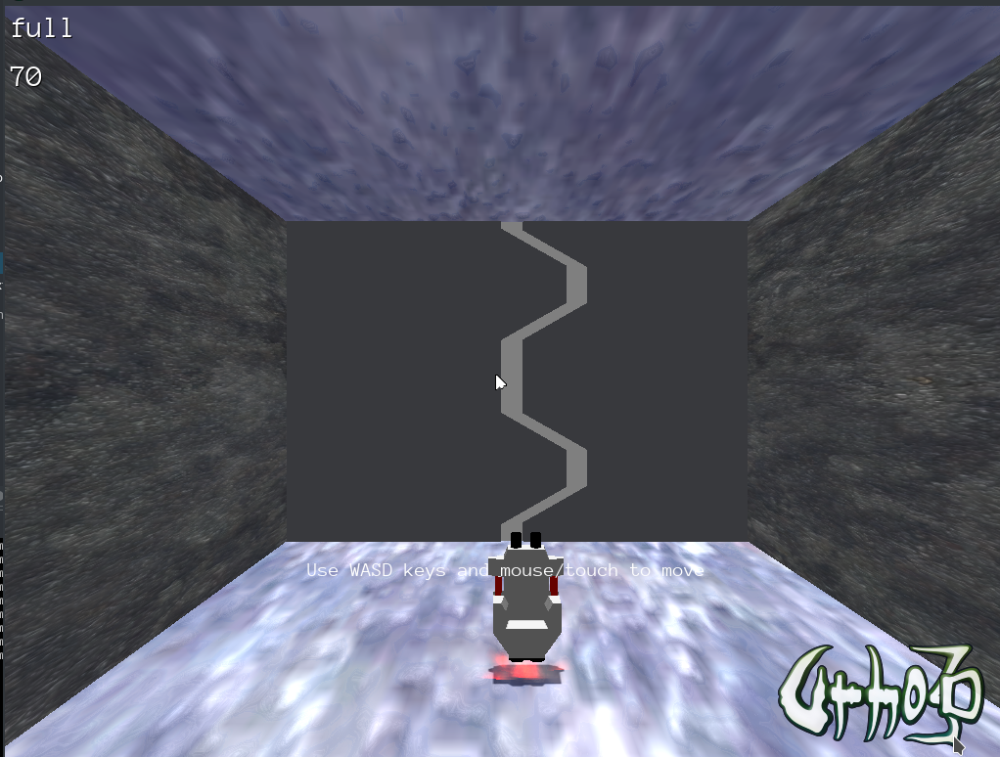
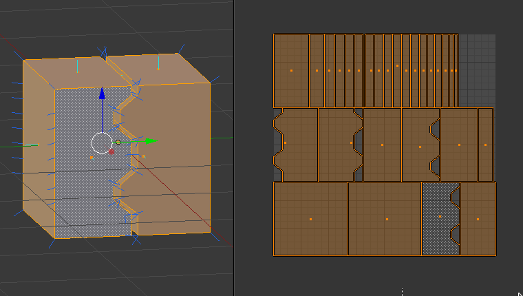

Hello,
This is going to be a very noob question. I am probably missing a concept.
So I have a room, created by very thin boxes:

I play changing the materials that are already provided by the engine, all ok. Then I try to model(blender) a ship-like door, export the mdl file and the materials are not showing as expected . As you can see the front wall is full grey while the materials in side walls are correctly showing the stone material. I have to point that some of the faces of the object looks to render the material.
In my research I understood that I would need to take care of the UV mapping and the normals of the faces, which I think I did:

What else am I also missing?